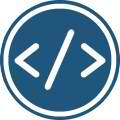

PONUDA
HTML & CSS
HTML i CSS su osnovni gradivni elementi Interneta, jezici koji pokreću web. U ovom kursu videćete kako HTML čini osnovu weba i na koji način se CSS ugrađuje i proširuje mogućnosti HTML-a. Upoznaćete se sa mogućnostima oba jezika, njihovom sintaksom, primenom i često korišćenim tehnikama. Razumećete osnove Bootstrap biblioteke i izgradnje responsive stranica. Naučićete kako da napravite web sajt od početka, pripremite sadržaj i grafiku i prilagodite web sajt mobilnim uređajima.
100€JAVASCRIPT & JQUERY
JavaScript je de facto glavni jezik za dodavanje interakcije web stranicama, a jQuery njegova najpopularnija biblioteka. Web dizajneri koji poznaju JavaScript i JQuery su u bitnoj prednosti jer sa web sajtom mogu da urade mnogo više nego samo uz HTML i CSS.
120€PHP & MYSQL
Znate HTML, CSS i JavaScript i spremni ste za sledeći korak? PHP programski jezik, u sprezi sa MySQL bazom podataka, je završni korak ka izradi kompletne web aplikacije. PHP je na webu zastupljen na preko 80% sajtova, a neke popularne PHP aplikacije su Facebook, Twitter, Wikipedia, Joomla!, WordPress...
200€WEB DEVELOPER
Želite dobro plaćen posao, fleksibilno radno vreme, raznovrsne projekte? Web developer je zanimanje čija popularnost konstantno raste. Web developer može raditi sam ili u timu, po projektu ili u firmi. Mogućnosti zaposlenja nisu ograničene samo na softverske kompanije – web developeri se najčešće bave freelancing-om.
320€